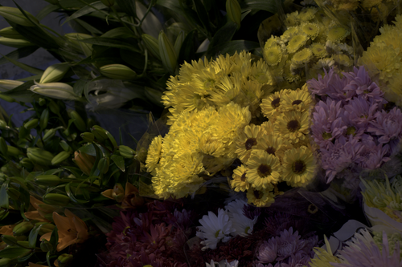
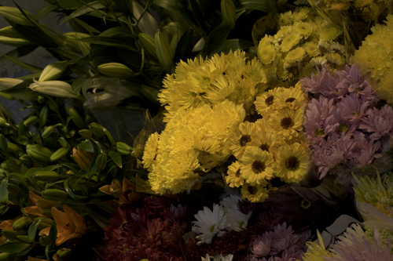
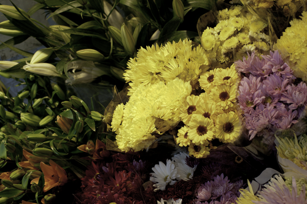
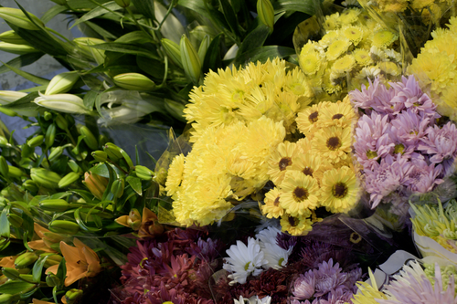
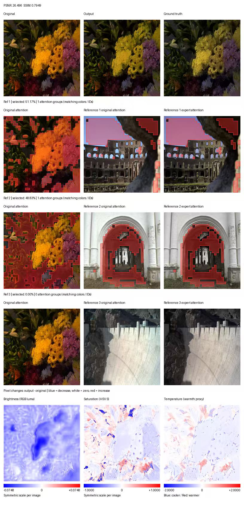
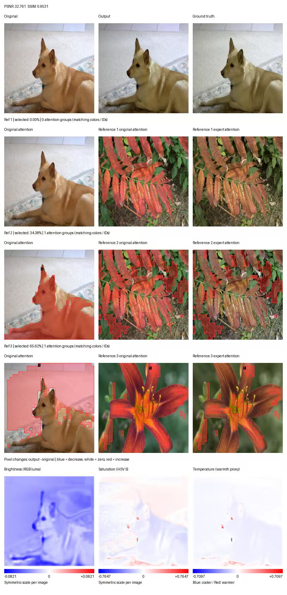
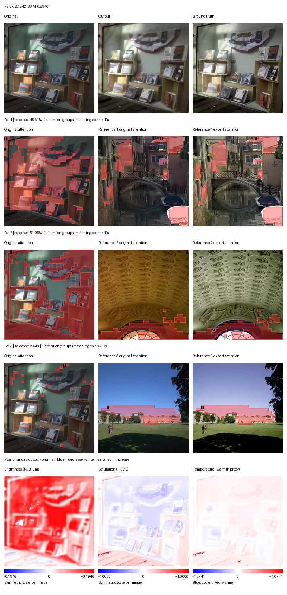
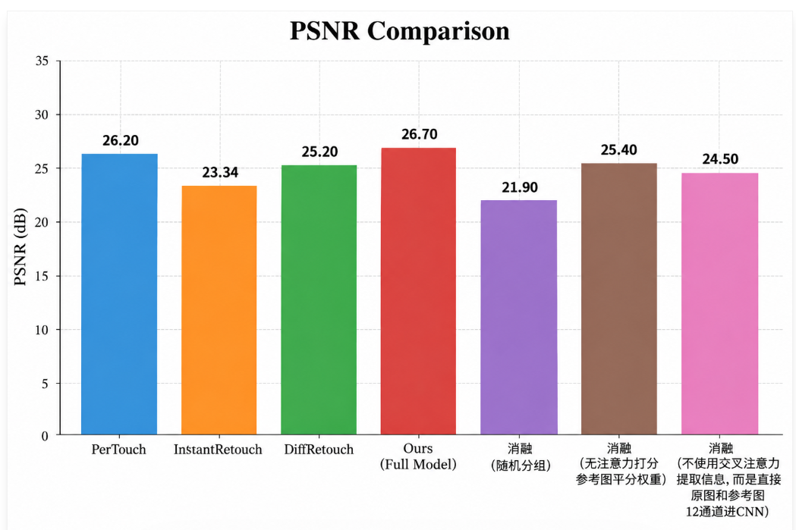
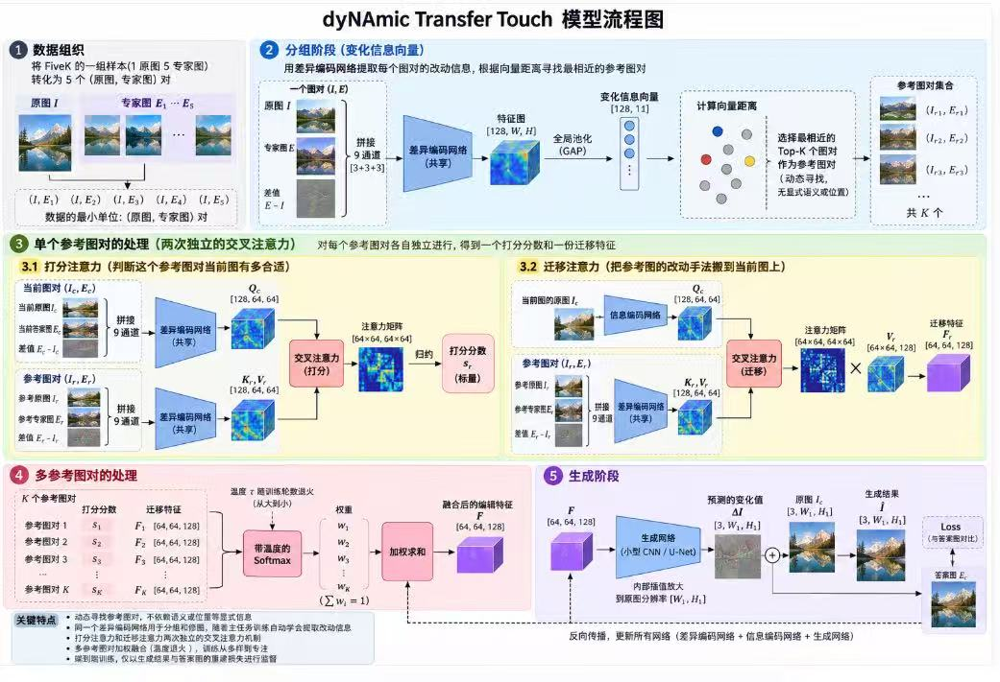

Reference-Guided Retouching
Archived evidence companion
Official FiveK specimens and archived experiments from earlier task formulations. These recorded predictions and metrics are separate from the current 27.2 dB / 0.90 results.
FiveK 0412 · one original, five expert renditions




Original DNG and expert TIFFs from MIT–Adobe FiveK. Bychkovsky, Paris, Chan & Durand, CVPR 2011. These expert images are dataset targets.
Processing matches the project loader: camera white balance for DNG, 8-bit RGB, Pillow TIFF conversion, 256-square model input. No additional ICC conversion was applied. The TIFF colour profiles and DNG rendering need standardisation before a colour-managed reproduction.
Flowers · full recorded diagnostic
PSNR 26.496 dB · SSIM 0.7949. Reference selection shares: 51.17%, 48.83%, 0%.
Shares count query regions selecting a reference. Matching colours and IDs show connected groups of strong attention links. This record has no archived checkpoint or run version.

Dog · full recorded diagnostic
PSNR 32.761 dB · SSIM 0.9531. Reference selection shares: 0%, 34.38%, 65.62%.
Two references show the same leaves with different edits; the third is a lily. The record illustrates correspondence across scenes; its checkpoint and run version are unarchived.

Books · full recorded diagnostic
PSNR 27.242 dB · SSIM 0.8946. Reference selection shares: 45.61%, 51.95%, 2.44%.
The recorded checkpoint and raw attention tensors are unavailable. Metrics are transcribed from the original figure, with no recalculation from compressed images.

Reported comparison · original chart
This earlier comparison chart is retained for inspection. The current presentation reports a different experiment and a new set of ablations.

Within-project resultsFull: 26.70 dB. Random references: 21.90. Equal weights: 25.40. CNN fusion: 24.50.
Comparison scopeMatching training splits, run configurations and random-seed uncertainty are not documented alongside the chart. The external-method entries do not establish a controlled ranking.
Separate milestoneThe earlier 26.6 dB / 0.88 SSIM report concerns a separate evaluation scope. It is not the average of the three example panels.
Reproduction requirementArchive weights, source revision, candidate-pool policy, split IDs and per-image metrics together for the next comparison.
Architecture · historical diagram and baseline contract
The diagram records an earlier architecture. The current core slides follow the newer partial-edit formulation; this diagram and the baseline contract below remain historical.

Paired-edit retrievalOriginal, expert target and their difference form a nine-channel input. A pooled 64-dimensional descriptor retrieves three pairs and excludes the same original.
Attention contractAt 256 × 256 input, Q/K scoring uses a 32 × 32 grid. Value features retain 64 × 64 resolution. Each query region chooses one reference; spatial correspondence inside a reference remains soft.
Training objectiveSupervised RGB L1 plus a 0.001 residual penalty. Candidate embeddings refresh per training chunk. This code does not implement a reinforcement-learning objective.
Historical scopeThe full target edit guides query retrieval in this baseline. Text requests and partial edits belong to the planned extension; the recorded figures do not establish its performance.